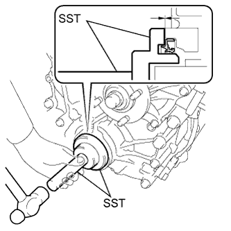
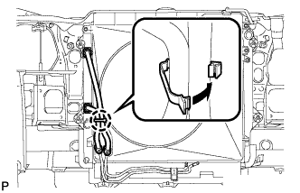

ПЕРЕДНИЙ САЛЬНИК КОЛЕНЧАТОГО ВАЛА > УСТАНОВКА |
| 1. УСТАНОВИТЕ САЛЬНИК КРЫШКИ ЦЕПНОГО ПРИВОДА ГАЗОРАСПРЕДЕЛИТЕЛЬНОГО МЕХАНИЗМА |
|  |
Нанесите универсальную консистентную смазку на кромку нового сальника.
Временно установите сальник в крышку цепного привода газораспределительного механизма.
С помощью SST и молотка запрессуйте сальник так, чтобы его поверхность была заподлицо с краем крышки цепного привода ГРМ.
| 2. УСТАНОВИТЕ ШКИВ КОЛЕНЧАТОГО ВАЛА |
 |
Совместите шпоночную канавку шкива с установочной шпонкой шкива и наденьте шкив.
С помощью SST затяните новый болт шкива коленчатого вала.
| *a | Удержание |
 | Поверните |
| 3. УСТАНОВИТЕ КОЖУХ ВЕНТИЛЯТОРА |
Установите шкив вентилятора на насос системы охлаждения.
Поместите кожух вместе с вентилятором вискомуфты между радиатором и двигателем.
Установите вентилятор вискомуфты на насос системы охлаждения и предварительно закрепите его 4 гайками. Затяните гайки вручную до упора.
 |
Присоедините захваты кожуха к радиатору, как показано на рисунке.
Закрепите кожух 2 болтами.
Установите поликлиновой ремень вентилятора и генератора (Нажмите здесь).
Затяните 4 гайки вентилятора вискомуфты.
|  |
Введите в зацепление захват, чтобы сомкнуть зажим гибкого шланга, как показано на рисунке.
| 4. УСТАНОВИТЕ РАСШИРИТЕЛЬНЫЙ БАЧОК РАДИАТОРА |
Установите расширительный бачок радиатора и закрепите его 3 болтами.
Подсоедините шланг бачка к радиатору.
| 5. УСТАНОВИТЕ ВЕРХНЕЕ УПЛОТНЕНИЕ КРОНШТЕЙНА РАДИАТОРА |
Установите верхнее уплотнение кронштейна радиатора и закрепите его 13 фиксаторами.
| 6. ПРОВЕРЬТЕ, НЕТ ЛИ УТЕЧЕК МАСЛА |
Запустите двигатель. Убедитесь, что в узлах, в которых выполнялись работы, нет утечек масла.
| 7. ПРОВЕРЬТЕ УРОВЕНЬ МОТОРНОГО МАСЛА |
Прогрейте двигатель, затем остановите его и подождите 5 минут.
Убедитесь, что уровень масла находится между отметками низкого и максимального уровней на щупе проверки уровня масла.
Если уровень масла находится на низком уровне, убедитесь в отсутствии утечек моторного масла и долейте масло до максимальной отметки.